Tutorial 16, Part B – Drawing Hair Using Live Path
Effects
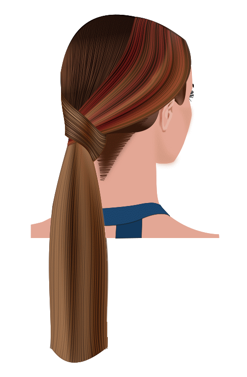
Inkscape’s Live Path
Effects offer the graphic designer a way to draw hair, fur, and other
objects that need to appear as a series of wavy curves. By combining
sub-path stitching, envelope deformation, lattice deformation, and
sub-path interpolation, the artist can draw areas where the filaments of
hair and fur, and the threads of textiles add texture, depth, and
attractive detail to the composition of a piece of artwork.
This tutorial is the second part of a two-part tutorial series. In this
part, Tutorial 16, Part B, we will focus on the Interpolate Sub-Paths
Live Path Effect to draw hair. We will also use the Envelope
Deformation and Lattice Deformation Live Path Effects to refine the
overall shapes of areas of hair and create the smooth flow of hair that is
trained into a ponytail.
You’ll learn how to do the following techniques:
draw curves that fill the space between two parallel or sub-parallel
boundary curves.
refine the shape of a multi-curve object using envelope deformation
and lattice deformation tools.
Use transparency and color blending to create a sense of hair depth.
In this tutorial, you will continue learning how to draw hair. You will be
working with three Live Path Effects. Interpolate Sub-paths is
a live-path function with which you draw two starting lines or curves, called
sub-paths that define the sides of a space that you intend to fill with
lines the run parallel to one side sub-path and, as they cross the intervening
space, they morph in curvature until they mimic the sub-path on the other side
of the fill space.
For more information about Live Path Effects, go to Help >
Inkscape Manual > 8. Live Path Effects (LPEs), and click on Stitch
Sub-Paths or Interpolate Sub-Paths.
Getting Started
Start Inkscape.
Download art file Tutorial16B_end.svg
and store it in a convenient location.
File > Open file Tutorial16B_end.svg. This file displays a
completed illustration of a young woman with a ponytail, facing away from
the viewer.
If you like, choose View > Zoom > Zoom Out to reduce the view of
the finished artwork, adjust the window size, and leave it on your screen
as you work. (Use the Select tool () to select and move the artwork
where you want it in the window.) If you don’t want to leave the
image open, choose File > Close.
Resource: For an illustration of the finished artwork in this
tutorial, see the top of this page.
If you have worked on Tutorial 16, Part A, then File > Open file
Ponytail.svg.
If, however, you have not worked on Tutorial 16, Part A, then download
the art file Tutorial16B_start.svg
and store it in a convenient location.
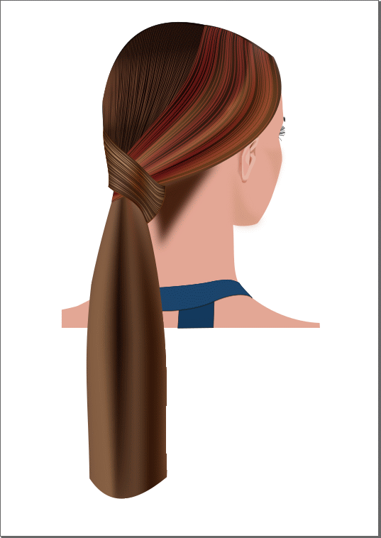
Young woman – Tutorial 16, Part B starting
artwork.
Choose File > Save As… and save the file as
Ponytail.svg in a convenient location. This file will be your
work file.
The art file contains the image of a young woman facing away from the
camera. The image is on two layers: the bottom layer, which is locked,
contains the woman as a mannequin figure; the second layer contains hair
and right ear.
Image of the head of a mannequin – bottom layer.
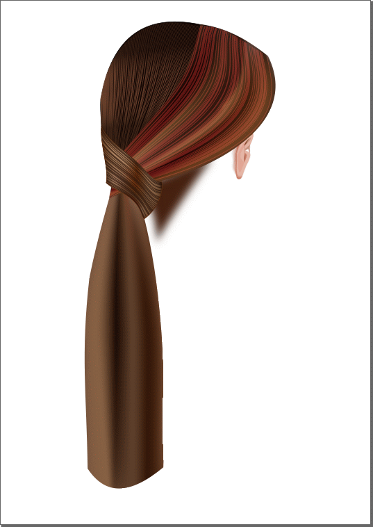
Image of the plan of the mannequin’s hair and ear –
upper layer.
The hair is divided into separate areas. Each area contains hair whose flow
has its own starting and ending points, degree of curvature, color and
gradient shading. Each area has its own place in the overall image stack
to create a sense of hair design as might be done in a salon.
Exploded view of the different areas of hair.
The woman’s ear is its own grouped object so that it can be placed
between two bodies of hair to enhance the sense of a 3-D presentation.
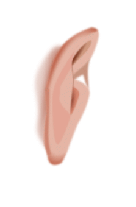
Image of the mannequin’s right ear.
The task of this tutorial is to create overlays that you will place
ontop of the areas of hair to create the look of strands of trained hair
that follow the curvature of each area. The coloration of underlying areas
and overlying hair filaments will be different to give the appearance of
darker hair underneath that is not reached by the light, and lighter-colored,
variegated hair that is reflecting light. The combination colors and styles of
coloration produce subtle depth.
Review of Stitch Sub-Paths and Envelope Deformation Live
Path Effects in Drawing Hair on the Nape of the Neck
If you have been taking a break away from Inkscape for a while, it might
be worthwhile to refresh your memory on the Live Path Effects that you have
learned in the previous half of this tutorial (Tutorial 16, Part A). In this
section, you will draw the hair that runs down the back of the model’s
neck in a triangular shape using the Stitch Sub-Paths Live Path Effect.
In subsequent sections, we will focus on learning and using the Sub-Path
Interpolation Live Path Effect.
With the Select tool (), select the reddisn-brown triangular
shape that represents hair on the nape of the model’s neck.
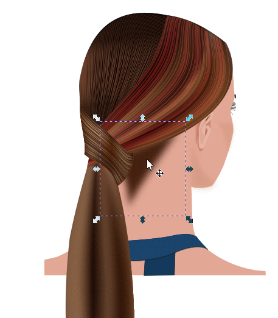
Selecting the neck hair line.
With the area of hair selected, choose Edit > Duplicate to
duplicate the object and move it to one side of the artwork.
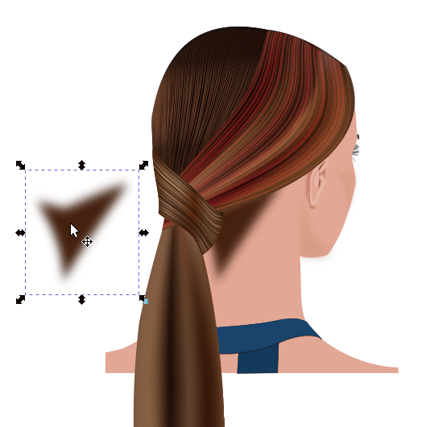
Duplicating and moving the neck hair line.
With the Pen tool (), draw two sub-paths that will define the left
and right sides of a stitch-path live path effect object. Draw them in
the same direction, that is, from down to up or vice versa. If you draw
them in opposite directions, the stitch paths will criss-cross, producing
an effect that you do not want.
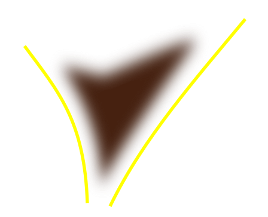
Drawing the left and right sub-paths that will define the
stitch paths.
Group-select the sub-paths using <Shift>-click.
Group-selecting the sub-paths.
Choose Path > Combine to merge the two sub-paths into one
compound sub-path that the Stitch Sub-Paths Live Path Effect can
use.
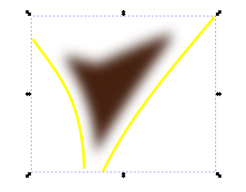
Combining the two sub-paths into one compound
sub-path.
Choose Path > Path Effects….
When the Path Effects dialog box appears, click on the Add
path effects plus sign icon (). The Live Path Effects
Selector appears.
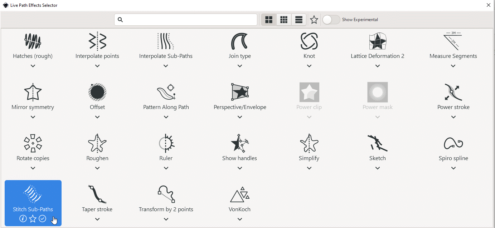
Live Path Effects Selector with the Stitch Sub-Paths
icon highlighted.
Scroll to the bottom of the Live Path Effects Selector until the
Stitch Sub-Paths Live Path Effect appears.
Click on the Stitch Sub-Paths icon. The figure below shows
five stitch paths that are four pixels wide. Five is the default number of
paths when you apply Stitch Sub-Paths for the first time to a
combined path object. Your lines might have a different width and color.
We gave the lines a yellow stroke so that they can be seen easily because
of the strong color contrast.
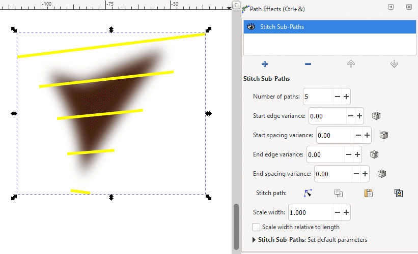
Activating the Stitch Sub-Paths Live Path Effect with five
stitch paths showing.
Change the Number of paths to 80. There are so many
lines that, at 4 pixels width, they merge and create a yellow swath.
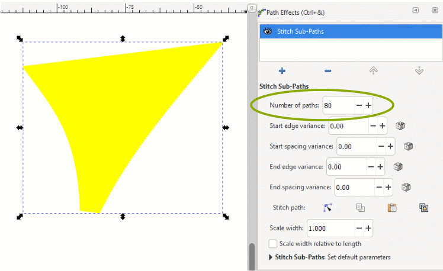
The number of stitch lines changed to 80.
Make the Fill and Stroke dialog box active and click on the
Stroke style tab. Change the stroke Width to 1.500 px.
Individual stitch lines are now visible.
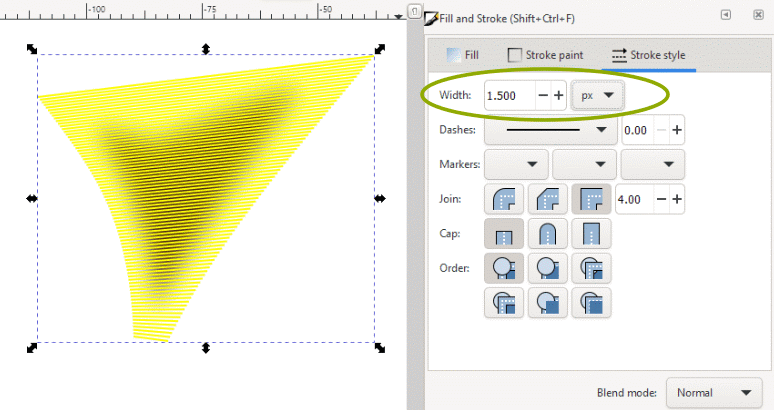
Changing the stroke width of the stitch lines to 1.5
pixels.
The bottom of the triangular shape is somewhat wide. You will make
it narrower.
Click on the Stitch path tool (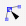). The Select tool
cursor turns into a Node tool cursor (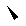).
Click inside the triangle. Nodes appear representing the endpoint of
the original sub-paths. Move the two bottom nodes closer together to tighten
the bottom of the triangle and adjust the directional handles as you see
fit.
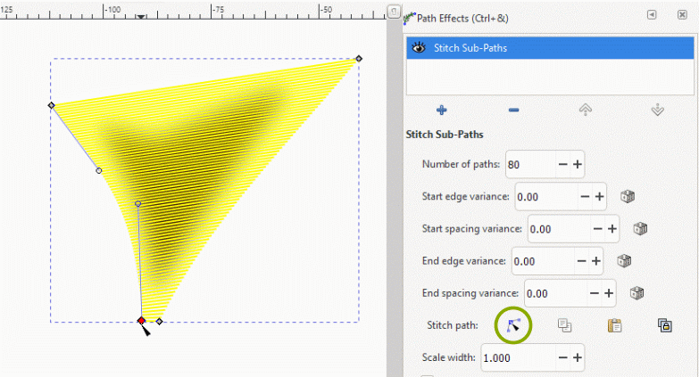
Adjusting the bottom of the triangular shape and directional
handles.
The stitch lines are all spaced at regular intervals. Introduce
some unevenness in distribution by entering the values into the Start
spacing variance and End spacing variance text boxes below.
Click either or both associated Random number generator icons
() and continue clicking until you get a
spacing style that you like.
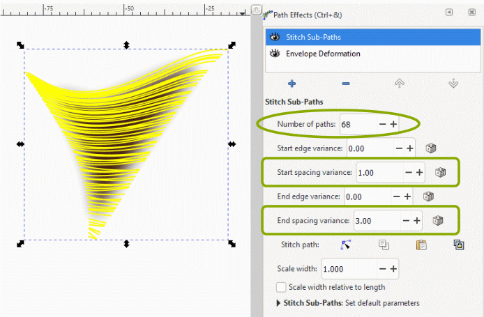
Introducing unevenness into the placement of the stitch
lines.
Make the Fill and Stroke dialog box active. Click on the
Stroke paint tab and then click on the Dropper tool icon
(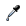) ⅔ of the way down the dialog box.
Click on the reddish-brown triangle to sample its color and give the
hair lines the same reddish-brown color.
Make the Path Effects dialog box active, change the Number
of paths to 100 and type in the Start edge variance and
End edge variance values shown in the figure below.
The start edge and end edge variance allow you to give the edges of
the triangle shape a little bit of unevenness, giving it a more organic
look compared to a triangle seen in a geometry textbook, as you can see
in the figure below.
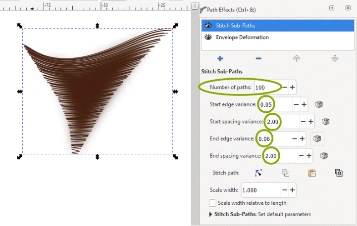
Making the edges of the triangular shape a little
uneven.
Marquee-select the triangular shape. Make sure you see two
bounding boxes, one encompassing the background shape and the other
encompassing the stitch-line object.
Press <Ctrl>-G to group the two objects.
Move the grouped hair object onto the artwork over the original
triangle.
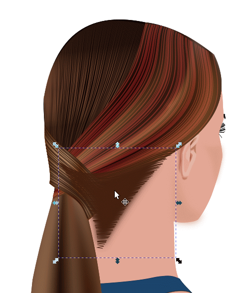
Grouping and moving the triangular hair object.
Click on the Lower selection one step icon () in the Tool Controls Bar three times to lower it
below 1) the knot above the ponytail, 2) the right side hair object you
worked on in Tutorial 16, Part A, and 3) the original triangular body of
hair (without the stitch lines).
Deselect the object you just moved and then click in the middle of it
to select the original triangle.
Move the triangle off the artwork to make sure that you actually selected
it (sometimes I miss) and delete it.
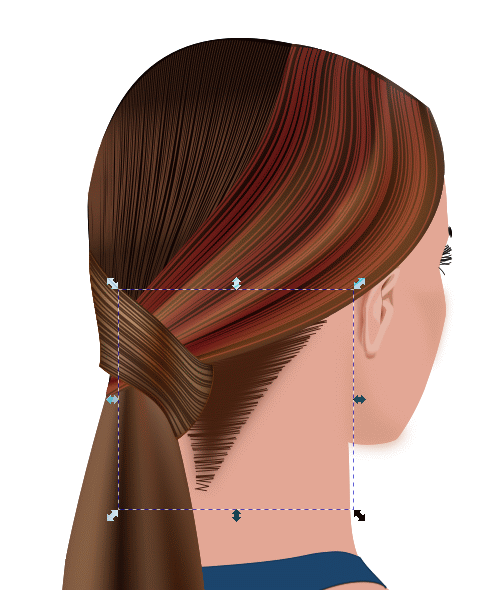
Triangle with the underlying original shape
removed.
Demagnify the artwork and make any fine adjustments you deem
necessary.
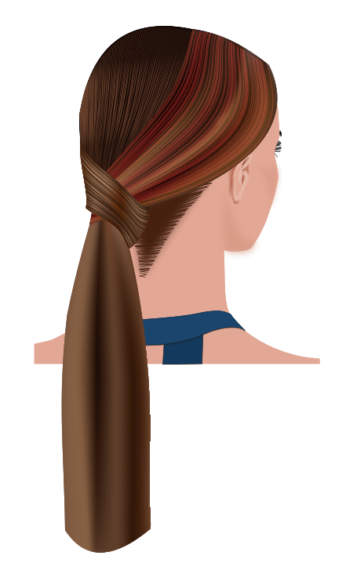
Current artwork.
File > Save your artwork.
Drawing the Right Side-Bang and Back Bang Using the Sub-Path
Interpolation Live Path Effect
Drawing using the Sub-Path Interpolation Live Path Effect is
similar to drawing with the Stitching Sub-Path function. The steps
you take to draw are exactly the same as those for stitching sub-paths. The
two differences are that lines are drawn parallel or sub-parallel to the two
edge sub-paths and that there is no randomizing option to introduce
unevenness in line spacing and length.
In this section, you will draw the right side-bang and back bang (my
terminology) for the model using Sub-Path Interpolation.
Preparing the two sub-paths for the Sub-Path Interpolation
Live Path Effect is done in exactly the same way as for
Stitch Sub-Paths.
With the Pen tool (), draw two sub-paths (here, yellow is a great color to
use because of its contrast to the background coloration) that will be the
top and bottom limits of the space that the hairs will occupy. They
don’t need to be exact; they just need to provide a starting point
for the eventual geometry of the sidebang. Note that the upper sub-path
is drawn so that it lies ontop of the hair object you drew in Tutorial 16,
Part A. The reason for this placement is that the sidebang will look like
it comes out from underneath the larger hair object when you are finished.
Right now, you just need to see the starting layout.
The lines here are 4 pixels wide so you can see them easily. They will
remain as boundary lines when you apply Interpolate Sub-Paths.
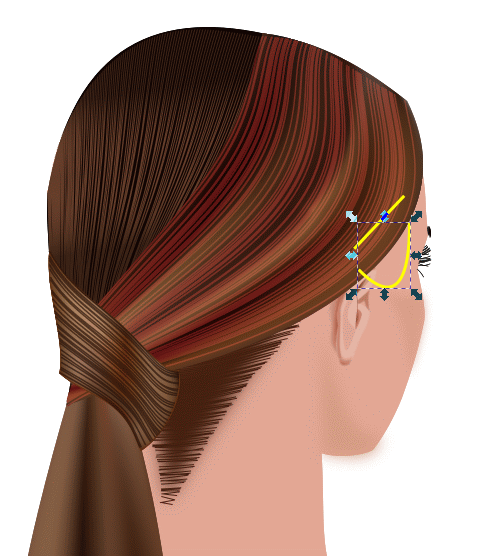
Rough drawing of the top and bottom limits of the sidebang
shape.
You will create a bend in the left side of the lower sub-path to
simulate hair that is pulled back behind the top of the ear.
Make the Node tool () active and double-click on the bottom of the lower
sub-path to add a new node there.
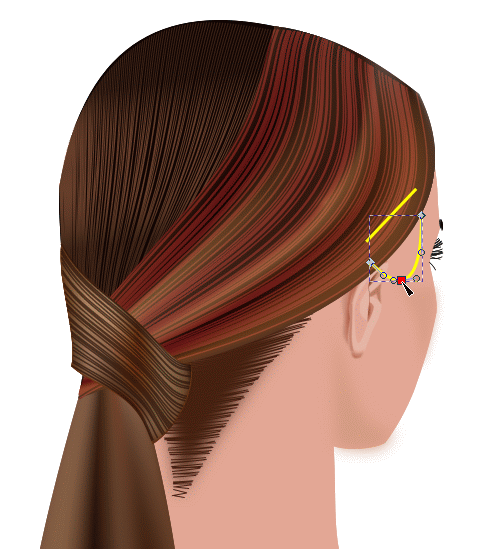
Adding a node to the lower sub-path.
Click on the left end-node of the lower sub-path to activate it.
When its directional handle appears, move it directly to the right to
create a bend in the sub-path that conforms to the curvature of the upper
part of the ear. Adjust the directional handles of the node that you just
added to micro-adjust the curvature if you desire.
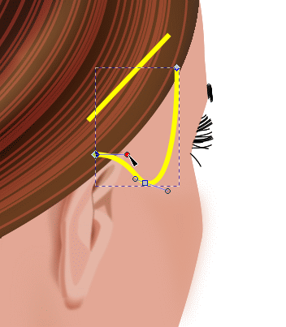
Adjusting the curvature of the lower path.
Now that the sub-paths have been drawn to satisfaction, you need to
prepare them for sub-path interpolation.
<Shift>-click both sub-paths to group-select them. You’ll
see that each one has its own bounding box.
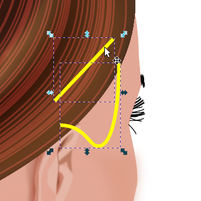
Group-selecting the sub-paths.
Choose Path > Combine to merge the two sub-paths into one
compound sub-path that Interpolate Sub-Paths can work with.
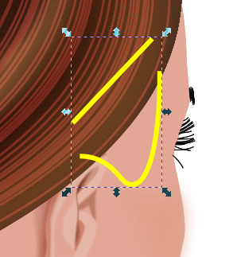
Combining sub-paths.
Choose Path > Path Effects….
When the Path Effects dialog box appears, click on the Add
path effects plus sign icon () to make the Live Path Effects
Selector appear.
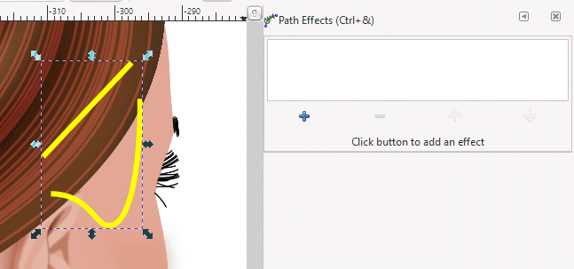
The Live Path Effects dialog box.
Click on the Interpolate Sub-Paths icon.
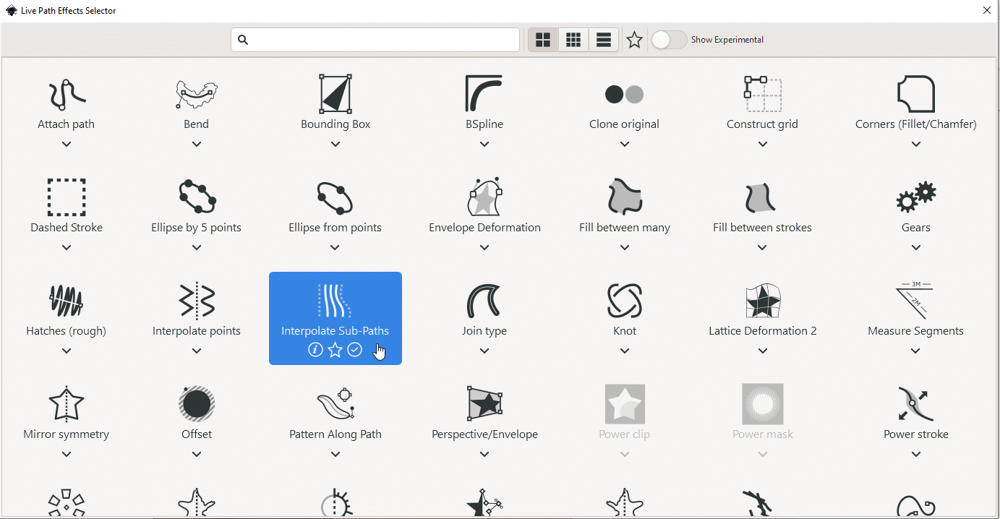
Live Path Effect Selector with the Interpolate Sub-Paths icon
highlighted.
The space between the two sub-paths is filled with three sub-parallel
lines. The default number of paths when you first apply Interpolate
Sub-Paths is 5. You will change that number shortly.
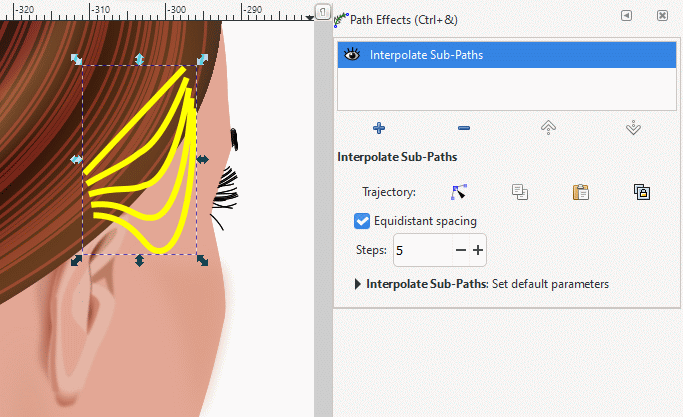
Applying the Interpolate Sub-Paths Live Path
Effect.
Make the Fill and Stroke dialog box active and click on the
Stroke style tab.
Change the stroke Width to 1.000 px. This is a preparatory
step to increasing the number of lines in a way that you can see what
you’re doing more easily.
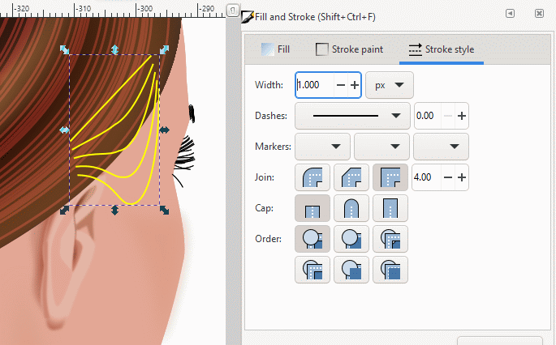
Setting the line stroke width to 1 pixel.
Make the Path Effects dialog box active. Set the Number
of paths to 30. The increased number of lines encased inside
the two original sub-paths give you a clearer idea of the layout of the
sidebang.
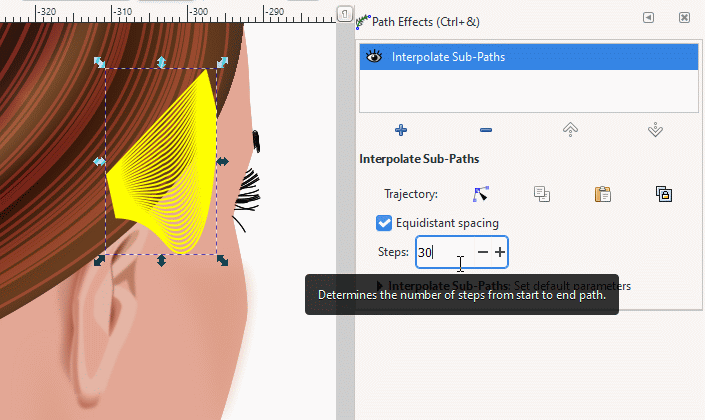
Increasing the number of paths to 30.
Change the color of the sideband to reddish brown.
Make the Fill and Stroke dialog box active and click on the
Stroke paint tab.
Type 45200fff in the RGBA text box and press <Enter>
to set the color value.
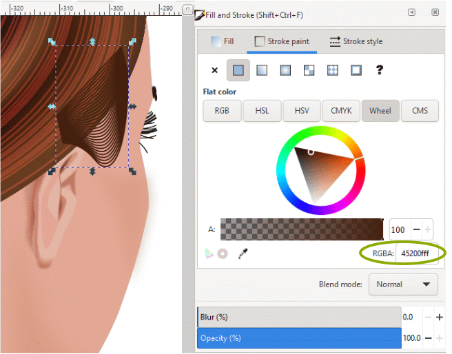
Changing the color of the lines from yellow to reddish
brown.
The sidebang needs to be positioned underneath the larger body of
hair it is partially situated upon and behind the ear.
Click on the Lower selection one step icon in the Tool Controls
Bar to lower the sidebang so that it lies underneath the upper larger
body of hair and underneath the ear. By arranging the sidebang in this
stacking order of the image stack, you have given this area of the hair and
face a three-dimensional feel.
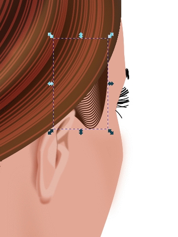
Lowering the sidebang so that it lies underneath the upper
body of hair and the ear.
The sidebang looks thin. It is composed of evenly spaced lines.
The Interpolate Sub-Paths Live Path Effect does not have the
randomizing capabilites that Stitch Sub-Paths has. However, we can
create an impression that the sidebang is more substantial than it currently
looks. We will create an underlying object that mimics the geometry of the
sidebang and give it a gradient that suggests that there is more hair
underneath and covered by the lines you drew that partially obscure
details.
Select the Ellipse tool () in the toolbox and draw an ellipse that
roughly mimics the size and shape of the sidebang. The ellipse might have a
reddish brown fill color because that was the last color you used in
coloring the sidebang. That color is the color you want for the
sidebang so that it harmonizes with the rest of the hair.
Drawing an ellipse.
With the ellipse still selected, click on the Radial gradient
icon () in the Fill and Stroke – Fill dialog box.
The ellipse now has a radial gradient attached to it that changes from
reddish brown to transparent at the edge. You will see different gradient
swatches in your Radial gradient library listing — what you
see in the figure below is the result of my experiments.
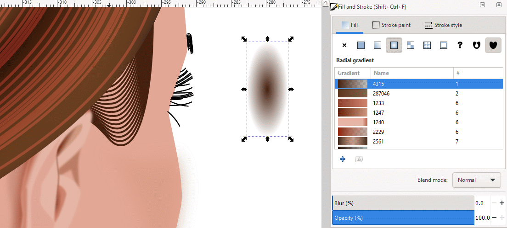
Setting a gradient to the ellipse.
If the Move gradients icon isn’t highlighted in the
Tool Controls Bar, click on it to activate it. If it is not made
active, you will still be able to move the ellipse, but its gradient will
remain behind, which can become irksome.
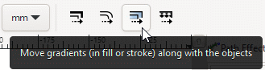
Move gradients icon unhighlighted.
Move the ellipse (with gradient) to the sidebang and position it so
that you can envision how it will appear when its orientation, size, and
gradient are adjusted to agree with the sidebang geometry.
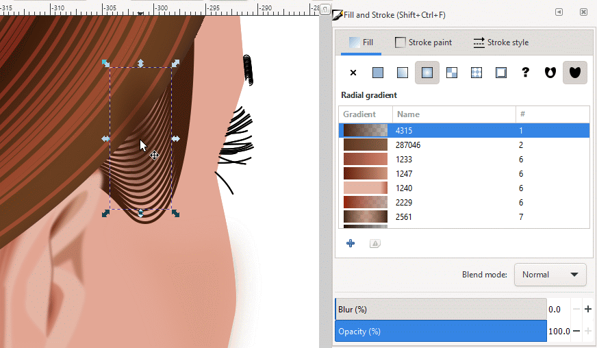
Moving the ellipse with gradient to the
sidebang.
Click on the Create and edit gradients icon () in the toolbox. The Radial gradient tool appears in the
ellipse. The square node controls the reddish brown center of the radial
gradient and the two circular nodes control the transparency at the edge.
The default edge transparency for new objects is 100%
transparency. This is what we want.
Rotate one of the circular gradient nodes so that a longer
directional handle (line) is aligned with the major axis (the long
direction) of the ellipse.
Rotating the Radial gradient tool.
Make the Select tool () active. Select the ellipse if it became
deselected, and move it, resize it, and rotate it until it closely mimics
the underlying sidebang object.
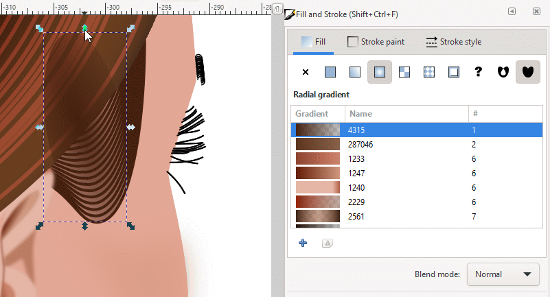
Moving, resizing, and rotating the ellipse to mimic the
shape of the sidebang.
Adjust the gradient by moving the gradient tool handles in and/or
out until you are satisfied with the result.
Adjusting the radial gradient.
You can see the upper half of the gradient ellipse. You will lower
it so that it lies underneath the body of hair above and the sidebang
lines.
The gradient ellipse still selected, click on the Lower selection one
step icon () in the Tool Controls Bar
twice: first to lower the gradient ellipse to underneath the upper body of
hair, and second to lower it below the sidebang lines. If, however, it is
visible over the top of the ear, then click on the Lower selection one
step icon ()again to lower the ellipse so that
it appears behind the ear, thus maintaining the illusion of
depth.
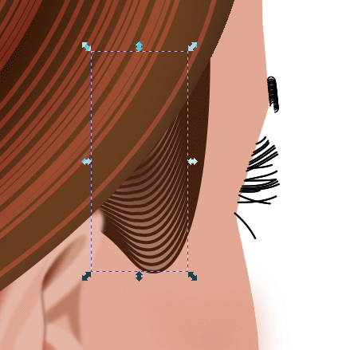
Lowering the gradient ellipse in the image
stack.
Reduce the magnification of the artwork so that you can assess
whether your current work appears as you want it to. Make whatever
corrections, modifications, and other edits as you see fit.
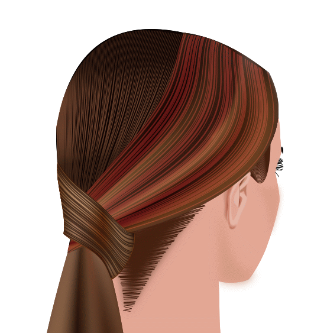
Reduced magnification of artwork.
Save your artwork with File > Save.
Now you’ll do the backbang (I don’t think that this word
exists but it’ll work for now). The steps you take will be almost
exactly like the ones that you took in drawing the sidebang. You
won’t include a gradient, however.
Draw the two sub-paths. Make sure you draw them going in the same
direction.
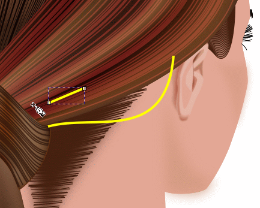
Drawing two sub-paths.
Group-select the two sub-paths using <Shift>-click.
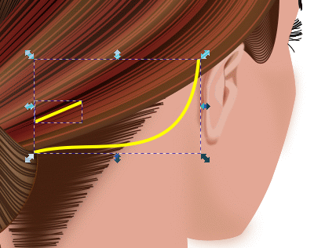
Group-selecting the two sub-paths.
Choose Path > Combine to convert the two sub-paths into one
compound sub-path.
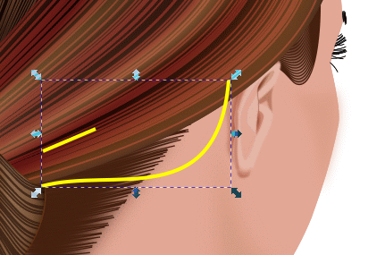
Combining the two sub-paths into one sub-path.
Choose Path > Path Effects and select Interpolate
Sub-Paths in the Live Path Effects Selector. You obtain
five linearly interpolated paths.
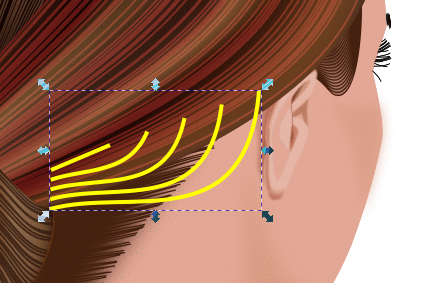
Applying the Interpolate Sub-Paths Live Path
Effect.
Using the Fill and Stroke – Stroke style dialog box,
change the stroke Width to 1.500 px.
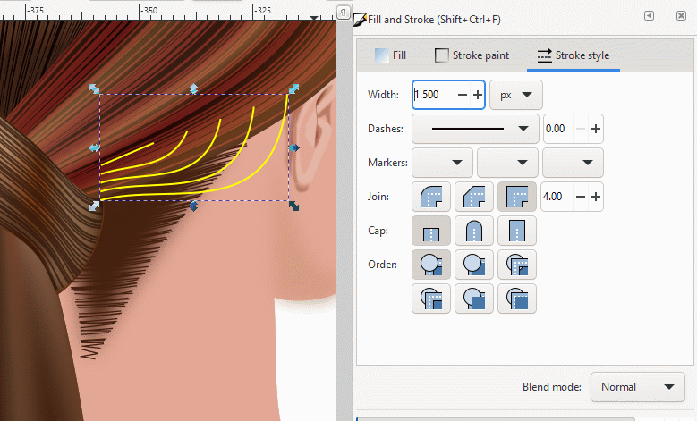
Changing the line stroke width to 1.5 pixels.
Make the Path Effects dialog box active and change the number
of Steps to 40.
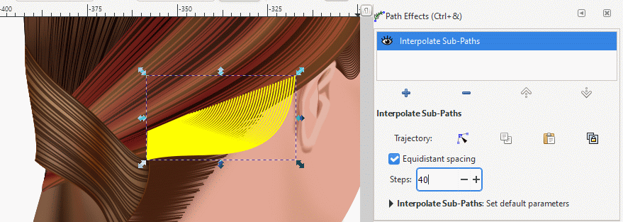
Changing the number of steps to 40.
Make the Fill and Stroke – Stroke paint dialog box and
type 32170bff in the RGBA text box to give the lines a dark
reddish brown color.
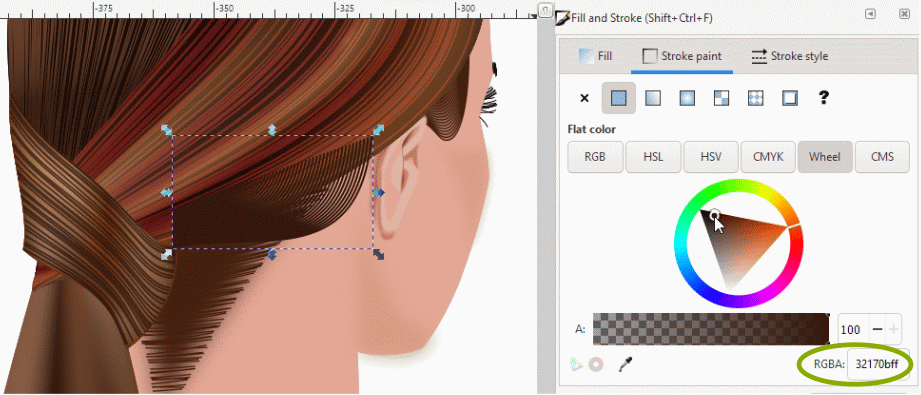
Giving the backbang lines a dark reddish brown
color.
With the backbang object still selected, lower it in the image
stack by clicking on the Lower selection one step icon () in the Tool Controls Bar once so that it is situated
between the overlying large body of hair and the triangle of hair on the
nape of the neck.
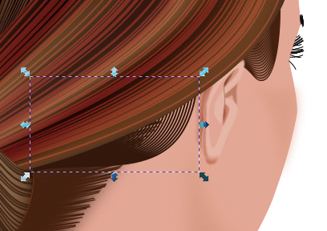
Lowering the backbang in the image stack.
Though we can’t make the spacing between backbang lines uneven,
we can simulate the effect a little bit by making the lines a little
thicker.
Make the Fill and Stroke – Stroke style dialog box active
and change the stroke Width to 1.750 px. The slight increase
in width and the upper part of the hair on the nape of the hair produces a
slight confusion in line geometry that can pass for uneven spacing.
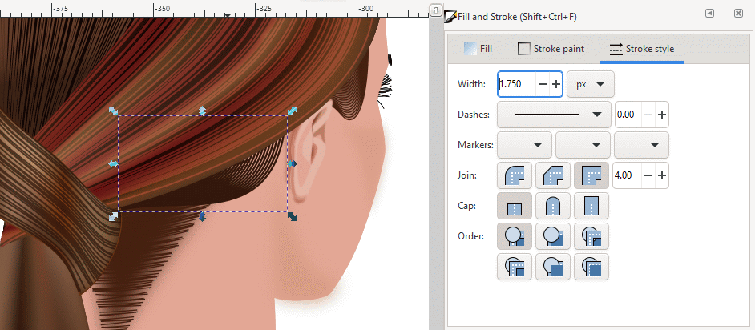
Increasing line width to 1.75 pixels.
Reduce the magnification of your artwork so that you can assess how
it appears from a vantage point a little farther away. Make any edits that
you feel are desirable or necessary.
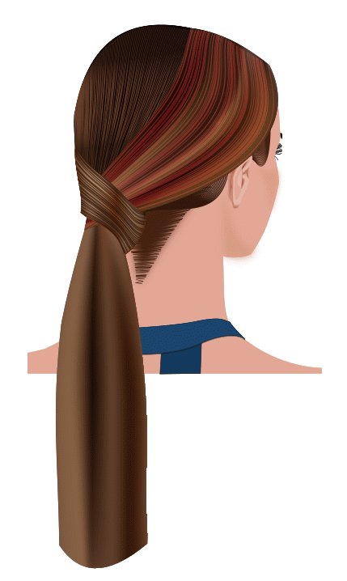
View of the current artwork.
Save your artwork with File > Save.
Drawing the Ponytail Using the Stitch Sub-Paths Live Path
Effect
You will draw the ponytail using Stitch Sub-Paths. The Start
spacing variance and End spacing variance options are great for
creating the subtle unevenness strands of hair naturally have in a long
ponytail.
With the Select tool (), select the ponytail.
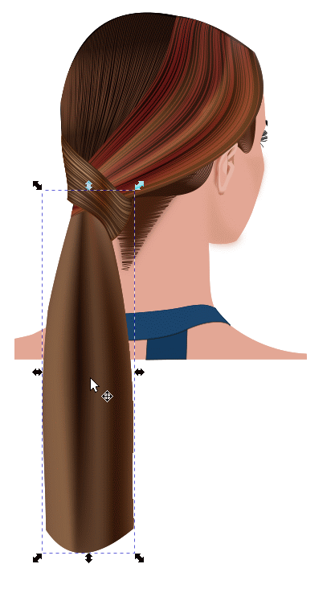
Selecting the ponytail.
With the ponytail selected, choose Edit > Duplicate to
duplicate it and move it to one side of the artwork.
Duplicating the ponytail and moving it to one side of the
artwork.
With the Pen tool (), draw two sub-paths that will define the top
and bottom sides of a stitch-path live path effect object. Draw them in
the same direction, that is, from left to right or vice versa. If you draw
them in opposite directions, the stitch paths will criss-cross, producing
an effect that you do not want.
Drawing the top and bottom sub-paths in preparation for
applying the Stitch Sub-Paths Live Path Effect.
Group-select the sub-paths using <Shift>-click.
Group-selecting the sub-paths.
Choose Path > Combine to merge the two sub-paths into one
compound sub-path that the Stitch Sub-Paths Live Path Effect can
use.
Combining the two sub-paths into one compound
sub-path.
Choose Path > Path Effects….
When the Path Effects dialog box appears, click on the Add
path effects plus sign icon (). The Live Path Effects
Selector appears.
Live Path Effects Selector with the Stitch Sub-Paths
icon highlighted.
Scroll to the bottom of the Live Path Effects Selector until the
Stitch Sub-Paths Live Path Effect appears.
Click on the Stitch Sub-Paths icon. The figure below shows
five stitch paths that are four pixels wide. Five is the default number of
paths when you apply Stitch Sub-Paths for the first time to a
combined path object. Your lines might have a different width and color.
We gave the lines a yellow stroke so that they can be seen easily because
of the strong color contrast. We also gave them a stroke width of
30 using the Fill and Stroke – Stroke style dialog
box.
Activating the Stitch Sub-Paths Live Path Effect with five
stitch paths showing.
Change the Number of paths to 20. There are so many
lines that, at 3 pixels width, they would merge and create a yellow
swath if you used 30 or 40 paths.
The number of stitch lines changed to 20.
Click on the Add path effects plus sign icon ().
The Live Path Effects Selector appears.
Click on the Envelope Deformation icon.
Live Path Effect Selector with the Envelope Deformation icon
highlighted.
The Envelope Deformation Live Path Effect is added to the
Live Path Listing and is highlighted, informing you that it is active.
Note that you will occasionally see spurious lines extending beyond the
bounding box. This lines result from minor discrepancies in how some lines
are calculated and rendered by Inkscape. They are easy to eliminate by
redrawing bend paths and original sub-paths, by changing the number of
stitching paths, and by changing the character of randomness of hair spacing
and length (start and end edges). The changes you make can be very small in
order to eliminate those rendering errors. You might also see spurious holes
in the paths, which also result from calculation errors. Again, just make
minor changes as suggested above to make them disappear.
Adding the Envelope Deformation Live Path Effect to the
list of available live path effect functions.
Click on the Left bend path icon () and adjust
the left side of the stitch-path object using the line segment and end nodes
so that the stitch lines bend in agreement with the left edge of the
underlying reddish brown background object. Note that a hand icon appears
by the cursor whenever it is positioned above an object that can be
manipulated.
Adjusting the left side of the stitch-path
object.
Click on the Right bend path icon () and adjust
the right side of the stitch-path object by moving the line segment and end
nodes. Note that the left side of the stitch lines move a little to the
right, also. You will correct this shortly.
Adjusting the right side of the stitch-path
object.
Click on the Top bend path icon () and adjust
the top side of the stitch-path object if it needs fine-tuning.
Adjusting the top side of the stitch-path object.
Click on the Bottom bend path icon () and adjust
the bottom side of the stitch-path object if it needs fine-tuning.
Adjusting the bottom side of the stitch-path
object.
Click on the Left bend path icon () again. This
time, double-click on the middle of the bend path to add a node at that
location. This new node will help you do fine control of the curvature of
the left side of the stitch paths.
Adding a new node to the left bend path.
Click on the upper node of the direction handle and drag it upward
until the curvature of the stitch paths in the upper left part of the path
object come into close agreement with the left edge path.
Then click on the lower end node of the left bend path and move it to do
the same type of adjustment with the lower left corner of the stitch line
path object.
Adjusting the left bend path.
If you see any micro-adjustments that need to be made on the right
side of the stitch paths, then click on the Right bend path icon
()
again and move the bend line and its nodes as you see fit.
Micro-adjusting the right side of the stitch path
object.
Make the Stitch Sub-Paths bar in the Path Effects
dialog box and increase the Number of paths to 30.
Increasing the number of stitch paths to 30.
Enter the values shown below into the Start spacing variance
and End spacing variance text boxes and click on their associated
Random number generator icons () until you obtain the kind of natural look to the strands of
hair in the ponytail that fall pleasingly on the eye. Remember that the
smaller the value, the less variation you see in spacing. You turn the
Random number generator off when you enter 0 into the text
box.
Note: you will occasionally see spurious line extensions and open
spaces that occur here and there. Eliminate them by click on a Random
number generator icon again, or by making small changes in the number
of stitch paths. They can be an annoyance, but they are easy to
eliminate.
Adding a natural-looking unevenness to the ponytail hair
strands using the Start and End spacing variance options.
Change the color of the hair strands to a reddish brown color (I used
4a2912ff in the RGBA text box), the Blend mode to
Screen, and the Opacity (%) to 70.0.
Changing the ponytail hair color to reddish brown with
Screen color blending.
Click off the ponytail to deselect it, and then marquee-select the
ponytail so that both the stitch-hair object and the background object are
selected. Press <Ctrl>-G to group them.
If the Snap Controls Bar isn’t active, choose View
> Show/Hide, and check the Snap Controls Bar checkbox. Click on Enable
snapping (%) (), Snap other points (centers, guide origins,
gradient handles, etc.) (), and Snap centers of
objects (). (The Snap centers of objects
icon has been darkened to make details more visible.)
With the Select tool (), move the ponytail so that
it lies directly ontop of the original red-brown background. Because the
Snap centers of objects tool is activated, you will see a pop-up
tooltip letting you know when the center of the ponytail is directly ontop
of the background area as shown below.
Moving the ponytail so that it lies directly above the
original flat color background object.
With the ponytail still selected, click on the Lower selection
one step icon () in the Tool Controls
Bar two or three times to lower it below the knot at the top of the
ponytail and below the flat color ponytail background object.
When the underlying ponytail background appears, click off the artwork,
click again on the original background ponytail object, which now should be
at the top of the image stack, and press the <Del> or <Delete>
key to delete it.
Finished ponytail.
Make any corrections and adjustments that you deem necessary, then
File > Save your artwork, and File > Quit to exit Inkscape.
You have learned how to draw hair using Live Path Effects. You now have
a feel for how to use Stitch Sub-Paths, Interpolate
Sub-Paths, Envelope Deformation, and Lattice Deformation
to draw, to make major and minor adjustments to, and to add a natural look to
human hair. Hair, fur, cloth, and other materials that are made up of fibers,
short and long, can be imitated with these drawing tools. Live Path Effect
tools are indeed sophisticated in their complexity, and yet this complexity
allows you to draw things that are naturally complex in nature.
Gradient, tranparency, and color blending tools are great supplementary
and complementary aids in creating a feeling of depth where, the deeper you
go, the less light gets through to places underneath an illuminated and yet
open surface.
Continue to explore these tools with different starting models, lighting,
and shapes to create something that looks remarkably close to reality, either
as we know it or as you would like to see it!
Review Questions
What is the primary distinction between Stitch Sub-Paths,
Interpolate Sub-Paths, Envelope Deformation, and Lattice
Deformation?
What tools are available for you to add depth to hair, fur, or cloth?
Review Answers
Stitch Sub-Paths and Interpolate Sub-Paths allow you
to determine how to draw and then actually draw the strands of hair, fur,
or threads of cloth that make up the foundation of that facet of your
artwork.
Envelope Deformation, and Lattice Deformation allow you to
shape and reshape the envelope that encompasses the body of hair, fur, or
cloth so that the entire geometry of the shape conforms with your concept.
The strands or filaments have to be drawn already in order for Envelope
Deformation, and Lattice Deformation to mold them into what you
envision.
The Linear gradient, Radial gradient,
Transparency/Opacity, and color Blend mode tools are available
to help you give depth, shading, illumination, iridescence, and fine
texturing produced by an external light source (internal light sources is
not explored in this particular tutorial).

 ) to select and move the artwork
where you want it in the window.) If you don’t want to leave the
image open, choose File > Close.
) to select and move the artwork
where you want it in the window.) If you don’t want to leave the
image open, choose File > Close.{kind=link}
{kind=link}


 ), draw two sub-paths that will define the left
and right sides of a stitch-path live path effect object. Draw them in
the same direction, that is, from down to up or vice versa. If you draw
them in opposite directions, the stitch paths will criss-cross, producing
an effect that you do not want.
), draw two sub-paths that will define the left
and right sides of a stitch-path live path effect object. Draw them in
the same direction, that is, from down to up or vice versa. If you draw
them in opposite directions, the stitch paths will criss-cross, producing
an effect that you do not want.
 ) and continue clicking until you get a
spacing style that you like.
) and continue clicking until you get a
spacing style that you like. ) in the Tool Controls Bar three times to lower it
below 1) the knot above the ponytail, 2) the right side hair object you
worked on in Tutorial 16, Part A, and 3) the original triangular body of
hair (without the stitch lines).
) in the Tool Controls Bar three times to lower it
below 1) the knot above the ponytail, 2) the right side hair object you
worked on in Tutorial 16, Part A, and 3) the original triangular body of
hair (without the stitch lines). ) active and double-click on the bottom of the lower
sub-path to add a new node there.
) active and double-click on the bottom of the lower
sub-path to add a new node there. ) in the toolbox and draw an ellipse that
roughly mimics the size and shape of the sidebang. The ellipse might have a
reddish brown fill color because that was the last color you used in
coloring the sidebang. That color is the color you want for the
sidebang so that it harmonizes with the rest of the hair.
) in the toolbox and draw an ellipse that
roughly mimics the size and shape of the sidebang. The ellipse might have a
reddish brown fill color because that was the last color you used in
coloring the sidebang. That color is the color you want for the
sidebang so that it harmonizes with the rest of the hair.
 ) in the toolbox. The Radial gradient tool appears in the
ellipse. The square node controls the reddish brown center of the radial
gradient and the two circular nodes control the transparency at the edge.
The default edge transparency for new objects is 100%
transparency. This is what we want.
) in the toolbox. The Radial gradient tool appears in the
ellipse. The square node controls the reddish brown center of the radial
gradient and the two circular nodes control the transparency at the edge.
The default edge transparency for new objects is 100%
transparency. This is what we want.


 ), Snap other points (centers, guide origins,
gradient handles, etc.) (
), Snap other points (centers, guide origins,
gradient handles, etc.) ( ), and Snap centers of
objects (
), and Snap centers of
objects ( ). (The Snap centers of objects
icon has been darkened to make details more visible.)
). (The Snap centers of objects
icon has been darkened to make details more visible.)